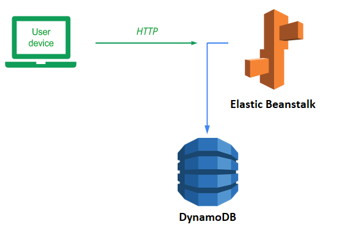
Elastic Beanstalk is a serverless platform (Platform-as-a-Service) that allows you to focus on writing an application, leaving the infrastructure management and deployment completely to AWS. Since our application is likely to become extremely popular, being able to deploy it on something like Elastic Beanstalk will allow us to seamlessly scale when it does. Elastic Beanstalk is very similar to Elastic Container Service, but in Elastic Beanstalk, AWS provides the environment (e.g. Python, NodeJS, Ruby) and all you need to do is provide the application code while in Elastic Container Service you provide both the application and the environment (via a container).
To begin with, we will first run the sample application from the AWS console. Visit the Elastic Beanstalk site from the console and click on "Create Application". Configure an application with the following settings
- Name the application
eb-hello - Select Python for the platform
- Choose "Sample application" for the application code
- Select the "High availability" preset.
Then, continue to the rest of the configuration.
We will need to configure a service role, the EC2 key pair and the instance profile for the application. Use the LabRole and LabInstanceProfile that have been pre-defined for your AWS environment. Then, continue to the rest of the configuration.
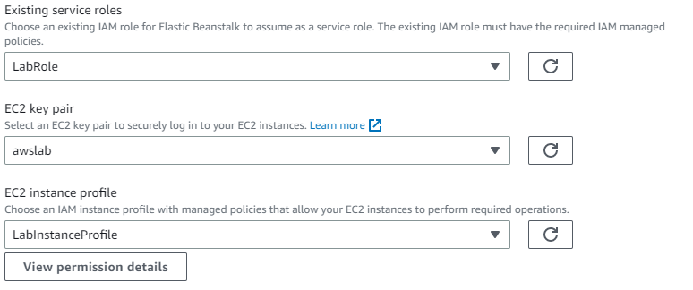
Continue to configure networking. Select the default VPC, activate public IP addresses, and select all subnets within us-east-1 for the load balancer. Skip the database configuration.
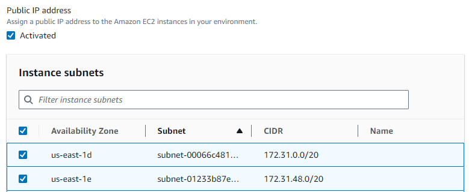
Continue to the next configuration step. Select the default EC2 security group and set the instance scaling to have a minimum of 2 servers that are load balanced.
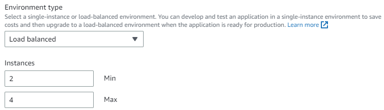
Within the Instance types dropdown, select multiple t2 machine types to allow Elastic Beanstalk some flexibility in the machines that are used to bring up your application (e.g. t2.large, t2.medium, etc.)
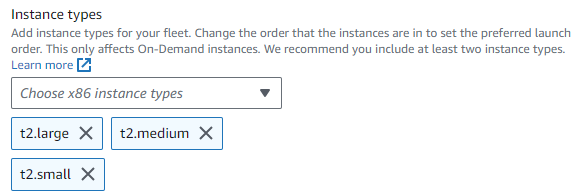
Navigate to the review step and submit the configuration to launch the application.
Elastic Beanstalk will automatically create all of the infrastructure (e.g. EC2 instances, Load balancers, VPCs, subnets, security groups, etc.) to run your application. This is done using the Cloud Formation service of AWS. Observe the output of Cloud Formation as it scrolls across to see the kinds of resources that are automatically set up for you to run the application and pause to appreciate how fortunate we are not to have to do it manually. Wait until the process completes (~5 minutes). At the top of the log message output, you will get a message confirming completion of the launch:
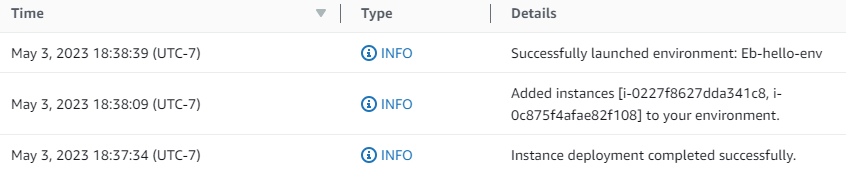
When the launch succeeds, click on the URL for the site to view the application that has been deployed.
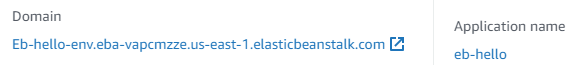
- Take a screenshot showing it has been brought up successfully
Visit the EC2 console and see that two instances have been brought up in separate availability zones for your application.
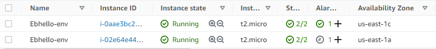
Select one of the instances running your environment and terminate it.
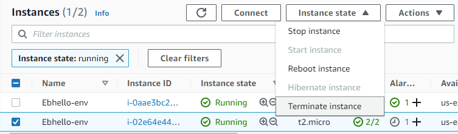
De-select the "Instance state: running" filter shown above in order to see the terminated instance after it shuts down. Terminating the instance will cause the number of instances to fall below our minimum of 2. Wait several minutes and then, using the Refresh icon in the EC2 UI, update the status. Elastic Beanstalk will notice the missing instance and launch a replacement.
- Take a screenshot of the replacement VM being started.
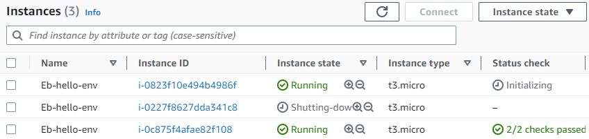
The beauty of managed platforms is that, as a developer or an operations engineer, you never have to touch any of the infrastructure to scale your application out or handle failures. Unfortunately, since we have a limited budget given to us, we'll need to bring down our application. If all we think to do is delete the EC2 instances to clean up, we'll run into billing sadness as Elastic Beanstalk will immediately bring the instances back up.
In order to take down our application, go back to the Elastic Beanstalk console and click on the "eb-hello" application. Then in "Actions", select "Terminate environment" to bring down the running environment and its deployed resources.
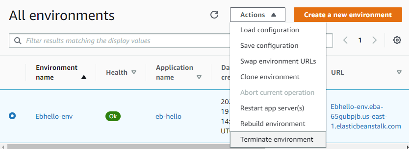
Finally, delete the application from Elastic Beanstalk.
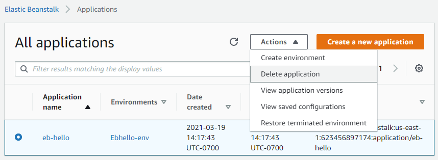
As with most AWS services, Elastic Beanstalk can be accessed both via the web console and via a command-line interface. As we've already done a deployment via the web console, we will now deploy our Guestbook application via the CLI. Ultimately, in CI/CD (Continuous Integration, Continuous Deployment) pipelines, building and deployment would be done via automated scripts.
To deploy our application, begin by bringing up the AWS CLI in Cloud Shell.
git clone https://github.com/wu4f/cs430-src cd cs430-src/05_aws_dynamodb
Then, initialize your Elastic Beanstalk application, specifying its name, a Python 3.8 environment, and the us-east-1 region to run in.
eb init -p python-3.8 guestbook --region us-east-1
Then, create an execution environment to run your application. We can give Elastic Beanstalk some operating parameters in terms of how many resources to allocate to our application including the minimum and maximum number of instances to deploy to server the application. In this case, we would like to specify a minimum of 3 and a maximum of 10 machines.
eb create guestbook-env \ --min-instances 3 --max-instances 10 \ --service-role LabRole --instance_profile LabInstanceProfile
Note that we specify the service role that is used to create the Elastic Beanstalk deployment (LabRole) as well as the profile attached to each EC2 instance used to run the application (LabInstanceProfile) that we attached the DynamoDB role to previously. As the command output shows, the resources required for the deployment are created. Wait until the command fully completes before continuing.
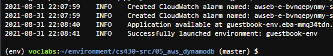
We can now deploy our code into the environment we just created. To do so, issue the following command:
eb deploy guestbook-env
This will create a new application version and deploy it. Wait for the command to complete. Contemplate how long this is taking because it is bringing up virtual machines. Wouldn't it be better if those machines were already up and all you needed to do is deploy a container to them? Maybe this is why people are moving to a container world!
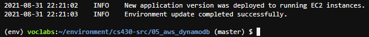
Visit the URL exported by the environment in the creation step and enter a message using your name, PSU e-mail address, and the message "Hello Elastic Beanstalk!".
- Take a screenshot of the Guestbook including the URL with the entry in it.
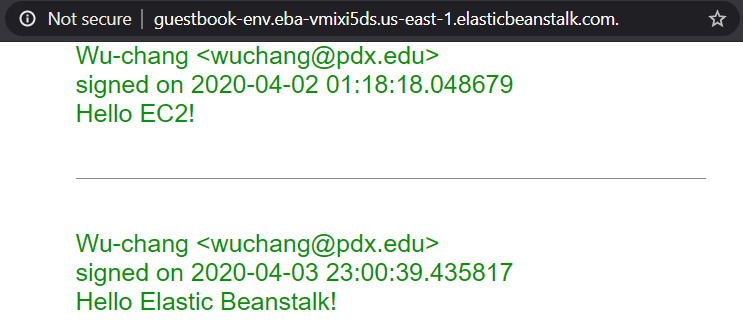
Then, visit the EC2 console to see that the specified minimum number of instances has been created
- Take a screenshot of them.
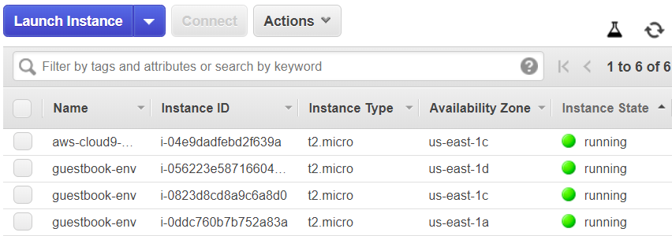
We will now destroy the infrastructure we deployed.
eb terminate --all
The application and environment will both be removed.